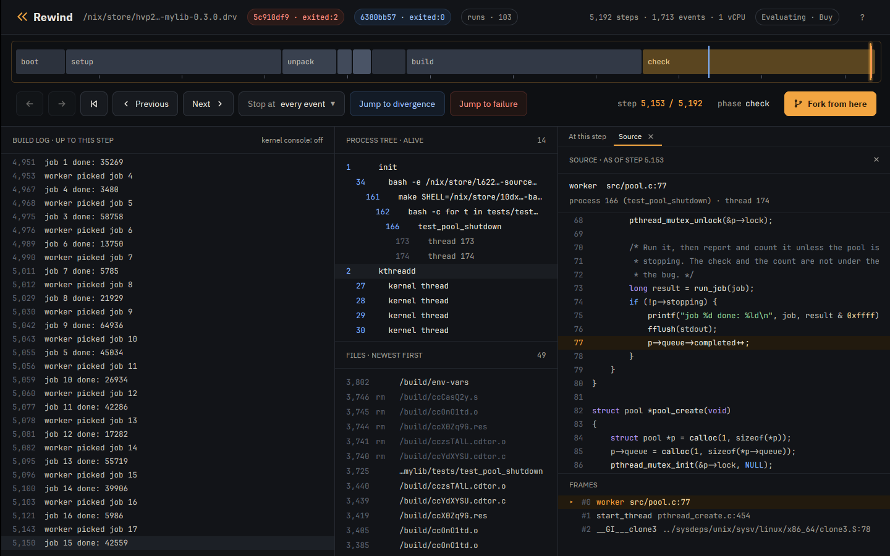
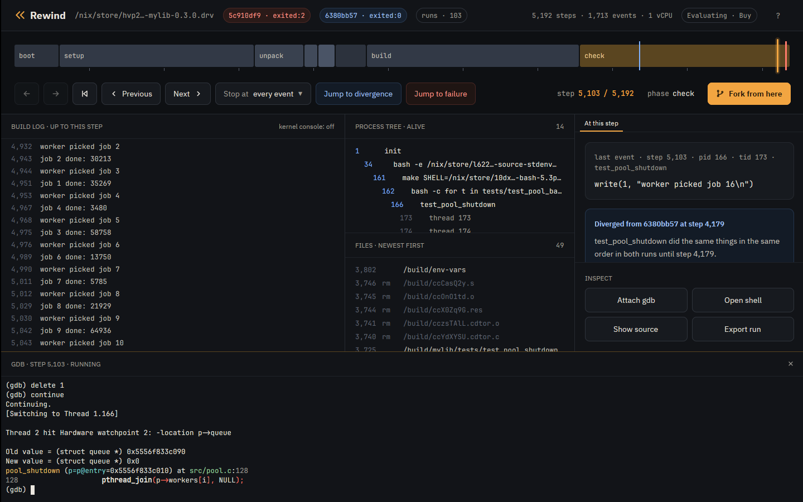
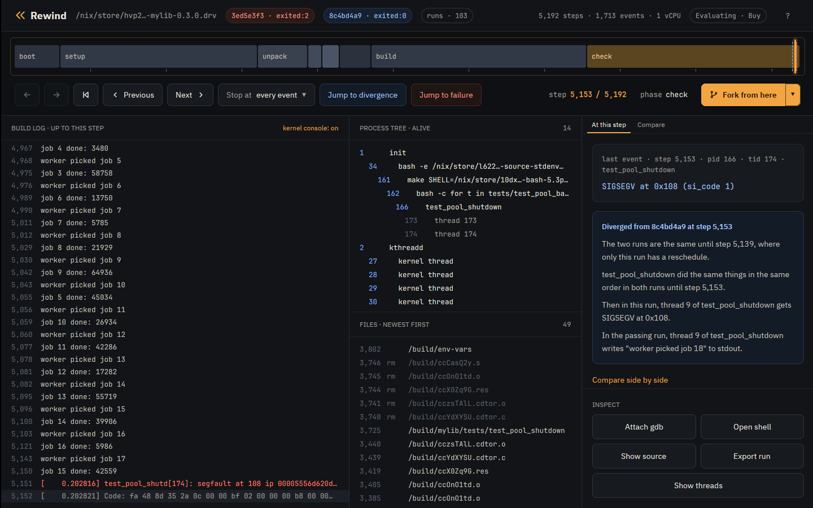
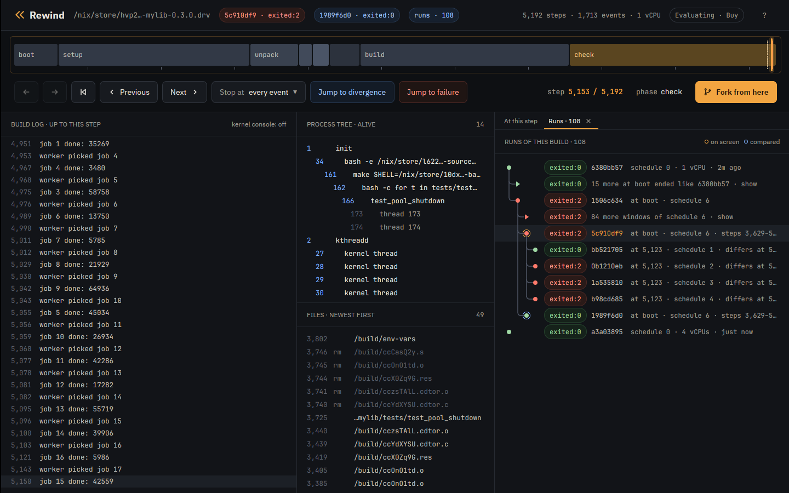
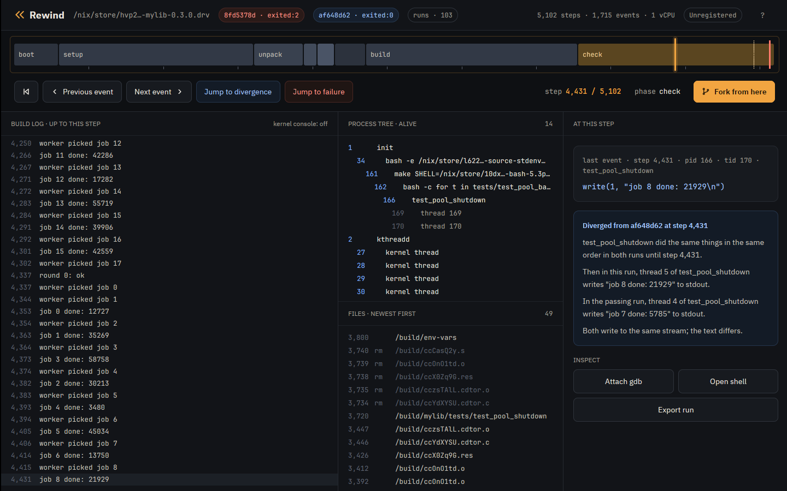
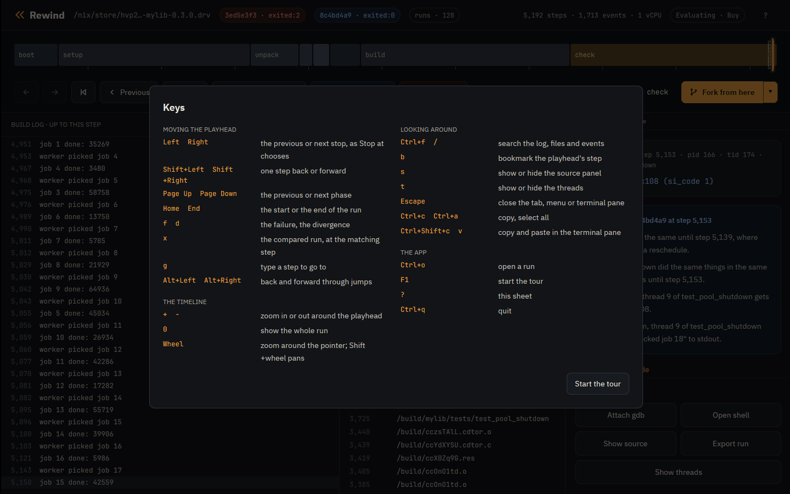

Tutorial · Advanced
Tutorial: advanced features
Short recipes for what the Nix and container tutorials leave out, each in the terminal and in the desktop app. They use the Nix tutorial's runs and install.
The runs
$ rewind check --epoch 1790985600 github:fzakaria/rewindvm#mylib | grep -E 'ends differently|perturbing only|passing:|failing:|open both'
rewind: packing 62 store paths for mylib-0.3.0
schedule 6 ends differently; narrowing the steps it perturbs
perturbing only steps 3629..5140 still ends differently
passing: run 6380bb57fcb451da
failing: run 5c910df9774b38f2
open both in the desktop app: rewind open 5c910df9774b38f2 4179 --compare 6380bb57fcb451daThe failing run crashes at step 5153.
Find the line a thread was on
rewind where names the line of the program's own code a thread was on at a
step, past the C library and, in Rust, the standard library and dependencies. By default
it looks at the thread of the step's own event, the pid/tid pair
rewind events prints; at 5153 that is the worker that segfaulted:
$ rewind where 5c910df9 5153
rewind: process 166 at step 5153; loading symbols for 4 of its files
rewind: fetched 3 source files from the VM
rewind: walking thread 174's stack in gdb
rewind: downloading debug info for libc.so.6; first time only
rewind: downloading debug info for libpthread.so.0; first time only
rewind: downloading debug info for ld-linux-x86-64.so.2; first time only
rewind: downloading the sources of libc.so.6; first time only
process 166 (test_pool_shutdown), thread 174, at step 5153
#0 worker (src/pool.c:77)
75 printf("job %d done: %ld\n", job, result & 0xffff);
76 fflush(stdout);
> 77 p->queue->completed++;
78 }
79 }
called from #1 start_thread (pthread_create.c:454)
called from #2 __GI___clone3 (../sysdeps/unix/sysv/linux/x86_64/clone3.S:78)
--tid picks another thread, on the CPU or not. At step 5150, the worker's
last write, the main thread is waiting to join the workers:
$ rewind where 5c910df9 5150 --tid 166
rewind: process 166 at step 5150; loading symbols for 4 of its files
rewind: read 3 source files fetched from the VM earlier
rewind: walking thread 166's stack in gdb
rewind: downloading the sources of libc.so.6; first time only
process 166 (test_pool_shutdown), thread 166, at step 5150
#7 pool_shutdown (src/pool.c:128)
126
127 for (int i = 0; i < POOL_WORKERS; i++)
> 128 pthread_join(p->workers[i], NULL);
129 pthread_cond_destroy(&p->ready);
130 pthread_mutex_destroy(&p->lock);
called from #8 main (tests/test_pool_shutdown.c:24)
called from #9 __libc_start_call_main (../sysdeps/nptl/libc_start_call_main.h:59)
--json prints every frame and which one was chosen. For every frame of every
thread, ask gdb for all the stacks of the process:
$ rewind gdb 5c910df9 5150 --pid 166 -- -batch -ex 'thread apply all bt' 2>/dev/null | grep -E '^Thread|src/|tests/'
Thread 4 (Thread 1.174 (test_pool_shutd, on the CPU)):
#14 worker (arg=0x5556f833c010) at src/pool.c:75
Thread 3 (Thread 1.173 (test_pool_shutd)):
#5 0x00005556d620d3a9 in run_job (job=17) at src/pool.c:45
#6 worker (arg=0x5556f833c010) at src/pool.c:73
Thread 2 (Thread 1.166 (test_pool_shutd)):
#7 0x00005556d620d5b3 in pool_shutdown (p=p@entry=0x5556f833c010) at src/pool.c:128
#8 0x00005556d620d272 in main () at tests/test_pool_shutdown.c:24
Thread 1 (Thread 1.4194305 (the CPU, in test_pool_shutd 174)):
rewind gdb starts in the thread rewind where looks at, in its
innermost frame. --tid and --frame start it elsewhere, with
frames numbered as where --json numbers them. In the main thread's frame that
where chose, pool_shutdown has already set the queue to NULL:
$ rewind gdb 5c910df9 5150 --tid 166 --frame 7 -- -batch -ex 'p p->queue'
rewind: process 166 at step 5150; loading symbols for 4 of its files
rewind: read 3 source files fetched from the VM earlier
rewind: gdb at step 5150 of 5c910df9774b38f2
arch_local_irq_restore (flags=518) at ./arch/x86/include/asm/irqflags.h:146
146 return !(flags & X86_EFLAGS_IF);
[Switching to thread 2 (Thread 1.166)]
#0 __syscall_cancel_arch () at ../sysdeps/unix/sysv/linux/x86_64/syscall_cancel.S:56
warning: 56 ../sysdeps/unix/sysv/linux/x86_64/syscall_cancel.S: No such file or directory
#7 0x00005556d620d5b3 in pool_shutdown (p=p@entry=0x5556f833c010) at src/pool.c:128
128 pthread_join(p->workers[i], NULL);
$1 = (struct queue *) 0x0
[Inferior 1 (process 1) detached]
where and gdb read each thread's registers from the VM kernel's task list, so
they work on runs recorded with a guest that lists its tasks, as these were.
In the app, Show source under Inspect, or the s key, opens the source panel in a tab
beside At this step. It names the line rewind where would for the thread of
the playhead's event and shows that line's whole source file, syntax colored, scrolled so
the line, marked, sits in the middle. The thread's frames are listed below the file, with
the chosen one marked; dragging the list's top edge makes it taller for a deep stack.
Clicking another frame shows its file instead, scrolled to its line and marked; a frame
without source shows its address and program. A file over a mebibyte comes as the lines
around its frames' lines, and the panel says which. Long lines scroll sideways with Shift
and the wheel, or a sideways swipe, while the line numbers stay put. When the playhead
rests on another step the panel asks again, back at the chosen frame, dimming the last
answer meanwhile; each answer forks the run, so it takes a few seconds. Runs the app
cannot fork say so instead: the bundled example and an export that holds only the trace.
So does a run recorded before the guest listed its tasks, which has to be recorded again.

Watch both sides of the race
A watchpoint finds who freed the queue the crash reads. Break in a worker so
p is in scope, watch p->queue, and continue:
$ rewind gdb 5c910df9 5103 -- -batch -ex 'break src/pool.c:74' -ex continue -ex 'watch -l p->queue' -ex 'delete 1' -ex continue -ex 'bt 2' -ex 'break src/pool.c:77 if p->queue == 0' -ex continue -ex 'bt 1'
rewind: step 5103 ran in process 166; loading symbols for 4 of its files
rewind: read 3 source files fetched from the VM earlier
rewind: gdb at step 5103 of 5c910df9774b38f2
arch_local_irq_restore (flags=518) at ./arch/x86/include/asm/irqflags.h:146
146 return !(flags & X86_EFLAGS_IF);
[Switching to thread 3 (Thread 1.173)]
#0 __syscall_cancel_arch () at ../sysdeps/unix/sysv/linux/x86_64/syscall_cancel.S:56
warning: 56 ../sysdeps/unix/sysv/linux/x86_64/syscall_cancel.S: No such file or directory
Breakpoint 1 at 0x5556d620d3a9: file src/pool.c, line 74.
Thread 3 hit Breakpoint 1, worker (arg=0x5556f833c010) at src/pool.c:74
74 if (!p->stopping) {
Hardware watchpoint 2: -location p->queue
[Switching to Thread 1.166]
Thread 2 hit Hardware watchpoint 2: -location p->queue
Old value = (struct queue *) 0x5556f833c090
New value = (struct queue *) 0x0
pool_shutdown (p=p@entry=0x5556f833c010) at src/pool.c:128
128 pthread_join(p->workers[i], NULL);
#0 pool_shutdown (p=p@entry=0x5556f833c010) at src/pool.c:128
#1 0x00005556d620d272 in main () at tests/test_pool_shutdown.c:24
Breakpoint 3 at 0x5556d620d433: file src/pool.c, line 77.
[Switching to Thread 1.174]
Thread 4 hit Breakpoint 3, worker (arg=0x5556f833c010) at src/pool.c:77
77 p->queue->completed++;
#0 worker (arg=0x5556f833c010) at src/pool.c:77
[Inferior 1 (process 1) detached]
The first stop is main nulling the queue in pool_shutdown, the
second the worker reading it. Watchpoints are the CPU's four debug registers, so the VM
runs at full speed until one fires. watch and awatch work; x86
has no rwatch. At user addresses they stop only in the process gdb started
in.
In the app, Attach gdb opens the same session under the timeline:

Follow the fault into the kernel
rewind gdb has the VM kernel's symbols too. Stop where the kernel sends the
SIGSEGV, and use its own gdb scripts:
$ rewind gdb 5c910df9 5150 -- -batch -ex 'break force_sig_fault' -ex continue -ex 'bt 4' -ex 'pipe lx-ps | tail -4' -ex 'pipe lx-dmesg | tail -2'
rewind: step 5150 ran in process 166; loading symbols for 4 of its files
rewind: read 3 source files fetched from the VM earlier
rewind: gdb at step 5150 of 5c910df9774b38f2
arch_local_irq_restore (flags=518) at ./arch/x86/include/asm/irqflags.h:146
146 return !(flags & X86_EFLAGS_IF);
[Switching to thread 4 (Thread 1.174)]
#0 __syscall_cancel_arch () at ../sysdeps/unix/sysv/linux/x86_64/syscall_cancel.S:56
warning: 56 ../sysdeps/unix/sysv/linux/x86_64/syscall_cancel.S: No such file or directory
Downloading 133.41 K source file /build/linux-7.2.8/kernel/signal.c...
Breakpoint 1 at 0xffffffff812c38b0: file kernel/signal.c, line 1757.
[Switching to Thread 1.4194305]
Thread 1 hit Breakpoint 1, force_sig_fault (sig=11, code=1, addr=0x108) at kernel/signal.c:1757
1757 {
#0 force_sig_fault (sig=11, code=1, addr=0x108) at kernel/signal.c:1757
#1 0xffffffff81e70490 in handle_page_fault (regs=0xffffc900001f3f58, error_code=6, address=264) at arch/x86/mm/fault.c:1483
#2 exc_page_fault (regs=0xffffc900001f3f58, error_code=6) at arch/x86/mm/fault.c:1536
#3 0xffffffff810012a6 in asm_exc_page_fault () at ./arch/x86/include/asm/idtentry.h:595
0xffff888003bbcec0 162 bash
0xffff888003810000 166 test_pool_shutd
0xffff888003bbee40 173 test_pool_shutd
0xffff888003811f80 174 test_pool_shutd
[ 0.202817] test_pool_shutd[174]: segfault at 108 ip 00005556d620d437 sp 00007feee6e68e10 error 6 in test_pool_shutdown[1437,5556d620d000+1000] likely on CPU 0 (core 0, socket 0)
[ 0.202822] Code: fa 48 8d 35 2a 0c 00 00 bf 02 00 00 00 b8 00 00 00 00 e8 ac fc ff ff 48 8b 05 b5 2b 00 00 48 8b 38 e8 8d fc ff ff 49 8b 46 58 <83> 80 08 01 00 00 01 e9 b5 fe ff ff 55 48 89 e5 41 54 53 be 78 00
[Inferior 1 (process 1) detached]
The kernel's DWARF comes from rewindvm.cachix.org with Nix, and from the
debug tarball next to rewind without. The app's build log shows the kernel's
messages beside the program's with kernel console on:

Use your own gdb
--listen serves the fork for a gdb started elsewhere, such as an IDE's, and
prints the command line that loads the same symbols:
$ rewind gdb 5c910df9 5153 --listen 127.0.0.1:1234
rewind: step 5153 ran in process 166; loading symbols for 4 of its files
rewind: read 3 source files fetched from the VM earlier
rewind: gdb at step 5153 of 5c910df9774b38f2; connect with: gdb -q -iex 'set debuginfod enabled on' -iex 'set debuginfod urls http://127.0.0.1:45661' -ex 'file /nix/store/vid1cadd24y1ay54ksi4fqpiab4wz761-rewind-guest-kernel-7.2.8- ...Bring tools into the VM
rewind shell --with adds a Nix package to the shell, without changing the
run. Here binutils disassembles the faulting instruction:
$ printf 'objdump -d --no-show-raw-insn --start-address=0x142c --stop-address=0x143e tests/test_pool_shutdown | tail -4; exit\n' | rewind shell 5c910df9 5153 --pid 166 --with nixpkgs#binutils
rewind: packing 21 store paths for --with
rewind: a shell at step 5153 of 5c910df9774b38f2; exit it to leave
[rewind] /build/mylib # objdump -d --no-show-raw-insn --start-address=0x142c --stop-address=0x143e tests/test_pool_shutdown | tail -4; exit
142c: mov (%rax),%edi
142e: call 10c0 <fflush@plt>
1433: mov 0x58(%r14),%rax
1437: addl $0x1,0x108(%rax)Give programs more CPUs
The VM has one vCPU, so by default programs see one CPU and Nix builds run one job at a
time. --cores tells them there are more, and the extra threads interleave on
the one vCPU:
$ rewind nix --cores 4 --epoch 1790985600 github:fzakaria/rewindvm#mylib
...
rewind: run a3a03895342cba33 exited:0 after 6174 steps, 0.216s virtual, 1.024s wall (poweroff)
/nix/store/f6a9gy362szw6nxx3ikrklr8glr6rdln-mylib-0.3.0 a9d703ba89774f3d matches your store, rewindvm.cachix.org$ printf 'nproc; echo $NIX_BUILD_CORES; exit\n' | rewind shell a3a03895 2467 --pid 110
rewind: a shell at step 2467 of a3a03895342cba33; exit it to leave
[rewind] /build/mylib # nproc; echo $NIX_BUILD_CORES; exit
4
4
Run Go programs with GOMAXPROCS=1 above one core: Go's garbage collector
spins waiting for a thread that never runs.
Steer the perturbation
check --schedules N tries more or fewer schedules, --all all of
them. rewind fork asks which schedules fail from a given step:
$ rewind fork 5c910df9 5123 --schedule 1 --quiet
rewind: run bb5217051025dbe2 exited:0 after 6766 steps, 0.226s virtual, 0.331s wall (poweroff)
rewind: the fork first differs from its parent at step 5151
rewind: open it beside its parent in the desktop app: rewind open bb5217051025dbe2 5151 --compare 5c910df9774b38f2
$ rewind fork 5c910df9 5123 --schedule 2 --quiet
rewind: run 0b1210ebb800ad34 exited:2 after 5204 steps, 0.203s virtual, 0.264s wall (poweroff)
rewind: the fork first differs from its parent at step 5151
rewind: open it beside its parent in the desktop app: rewind open 0b1210ebb800ad34 5151 --compare 5c910df9774b38f2
$ rewind fork 5c910df9 5123 --schedule 3 --quiet
rewind: run 1a5358100ed204c7 exited:2 after 5202 steps, 0.203s virtual, 0.269s wall (poweroff)
rewind: the fork first differs from its parent at step 5142
rewind: open it beside its parent in the desktop app: rewind open 1a5358100ed204c7 5142 --compare 5c910df9774b38f2
$ rewind fork 5c910df9 5123 --schedule 4 --quiet
rewind: run b98cd6853c6161e1 exited:2 after 5236 steps, 0.204s virtual, 0.268s wall (poweroff)
rewind: the fork first differs from its parent at step 5148
rewind: open it beside its parent in the desktop app: rewind open b98cd6853c6161e1 5148 --compare 5c910df9774b38f2The app's Runs tab, or the runs pill in its header, shows every run of the build, with forks under the run and step they branched from:

The Fork from here button forks the run at the playhead with the next schedule. A fork of a long run takes about as long as the run did: while forks made from the window run, the button's icon turns, and the Runs panel lists each fork as running, in a pulsing pill, until it ends and the panel shows how. Clicking a run opens it compared with the run it hangs under. Right-clicking one offers to compare every run with it instead, to copy its id or to delete it with its forks; Ctrl and Shift pick several. Forks that ran exactly as an older one did go in one click, with remove identical in the panel's header.
Find a run again
A command takes a run by its id or the start of one, by @ for the newest run
and @2, @3 and on for the ones before it, by a name for the
newest run with that name, or by its directory. rewind ls lists runs newest
first, and filters them:
$ rewind ls -n 3
b98cd6853c6161e1 exited:2 5236 steps mylib-0.3.0 (fork of 5c910df9774b38f2 at 5123, schedule 4)
1a5358100ed204c7 exited:2 5202 steps mylib-0.3.0 (fork of 5c910df9774b38f2 at 5123, schedule 3)
0b1210ebb800ad34 exited:2 5204 steps mylib-0.3.0 (fork of 5c910df9774b38f2 at 5123, schedule 2)
$ rewind ls --forks-of 5c910df9 --status failed
b98cd6853c6161e1 exited:2 5236 steps mylib-0.3.0 (fork of 5c910df9774b38f2 at 5123, schedule 4)
1a5358100ed204c7 exited:2 5202 steps mylib-0.3.0 (fork of 5c910df9774b38f2 at 5123, schedule 3)
0b1210ebb800ad34 exited:2 5204 steps mylib-0.3.0 (fork of 5c910df9774b38f2 at 5123, schedule 2)
--name mylib keeps the runs whose name contains mylib, and
--since the runs made in the last 30m, 2h or
7d, or since a day such as 2026-10-01.
--status takes passed, failed,
timed-out, running, interrupted or
unreadable, and failed takes timed-out runs too. A Nix run is
named after its derivation, and --name names any run.
rewind open starts the app on a run, at a step and beside another run.
check and fork print the command that opens what they made, as
the last line of check above shows. The failing run at the crash, beside the
passing one:
$ rewind open 5c910df9 5153 --compare 6380bb57Rebuild a run exactly
A run's id is the hash of its inputs, which its manifest.json lists, so the
same command makes the same run on a machine with the same CPU vendor and guest.
rewind show prints that command with every input spelled out, the epoch above
all, which by default is the start of the day the run was made. For a fork it prints its
parents' commands first, each with the id it makes. @, the newest run, is the
schedule 4 fork:
$ rewind show @
b98cd6853c6161e1 exited:2 5236 steps mylib-0.3.0 (fork of 5c910df9774b38f2 at 5123, schedule 4)
recorded by rewind 0.5.0 (dfe30e182f18)
rewind nix /nix/store/...-mylib-0.3.0.drv --epoch 1790985600 --schedule 6 --schedule-from 3629 --schedule-until 5140 --clock branches --name mylib-0.3.0 # 5c910df9774b38f2
rewind fork 5c910df9774b38f2 5123 --schedule 4 # b98cd6853c6161e1The failing run's command makes it again, with the same id:
$ rewind show 5c910df9 | tail -1 | sh
...
rewind: run 5c910df9774b38f2 exited:2 after 5192 steps, 0.203s virtual, 0.695s wall (poweroff)Compare any two runs
rewind diff compares every event of two runs, where
check compares only the failing program's:
$ rewind diff 6380bb57 5c910df9
first difference at event 1422: step 3636 on the left, step 3638 on the right
both 3616 142/142 SIGCHLD code=1 addr=0x0
both 3619 142/142 fork() = 149
both 3625 149/149 execve("/nix/store/2gfxiwls9hbgwdwcy43mprchwsq36mg6-coreutils-9.11/bin/realpath", ["realpath", "-s", "/nix/store/j7qx4s4mr17j1wqgvqdzj33lmrnzb387-gcc-16.2.0-lib/lib"])
left 3636 149/149 exit_group(realpath) exited:0
left 3638 142/142 SIGCHLD code=1 addr=0x0
left 3641 142/142 fork() = 150
left 3645 150/150 execve("/nix/store/2gfxiwls9hbgwdwcy43mprchwsq36mg6-coreutils-9.11/bin/realpath", ["realpath", "-s", "/nix/store/5q6bdxkp7lc70gn9mnf4yiybrx8ry5xq-gcc-16.2.0/lib/gcc/x86_64-unknown-linux-gnu/16.2.0"])
right 3638 149/149 exit_group(realpath) exited:0
right 3640 142/142 SIGCHLD code=1 addr=0x0
right 3644 142/142 fork() = 150
right 3645 150/150 execve("/nix/store/2gfxiwls9hbgwdwcy43mprchwsq36mg6-coreutils-9.11/bin/realpath", ["realpath", "-s", "/nix/store/5q6bdxkp7lc70gn9mnf4yiybrx8ry5xq-gcc-16.2.0/lib/gcc/x86_64-unknown-linux-gnu/16.2.0"])In the app, any run compared with another shows where they part, on the timeline and in the divergence card:

Script it
run, nix and fork exit with the job's status, as a
shell would report it, so a shell loop can ask which schedules fail from a step:
$ for s in 5 6 7 8; do rewind fork 5c910df9 5123 --schedule $s --quiet 2>/dev/null; echo "schedule $s: exit $?"; done
schedule 5: exit 0
schedule 6: exit 2
schedule 7: exit 2
schedule 8: exit 2
check exits 1 when a schedule ends differently and 0 when none does,
diff 1 when the runs differ, cat 3 when the file did not exist
at the step, and doctor 1 when this machine cannot record runs. With
--json, commands print JSON for a program to read in place of their text: one
object, or from ls and events one a line.
$ rewind ls --forks-of 5c910df9 --status failed --json | jq -r .id
20331831cfcdd898
0cbb7d7817529112
d2823e0f1cc54e4d
b98cd6853c6161e1
1a5358100ed204c7
0b1210ebb800ad34
$ rewind diff 6380bb57 5c910df9 --json | jq -c '.divergence | {left_step, right_step}'
{"left_step":3636,"right_step":3638}Move around a long run
Builds of larger projects run to hundreds of thousands of steps. In the app, the step readout is a field: click it, or press g, and type a step such as 3,495, or +100 or -100 to move from the playhead. Previous and Next, and the Left and Right keys, stop where the Stop at chooser beside them says: at every event, the build log's lines, processes starting and exiting, the bookmarks, or the thread, process, kind of event or file of the event at the playhead. A click on the step beside a log line or a file, or on a process, goes to its step.
Alt+Left and Alt+Right, or the mouse's back and forward buttons, go back and forward through jumps, so a press of f or d can be undone. The b key bookmarks the playhead's step with a note: the timeline marks it, the Bookmarks tab lists every bookmark, and they are kept with the run. Ctrl+F or / searches the build log, the kernel's console, file paths and events, and lists the matches by step.
The wheel over the timeline zooms around the pointer, down to 16 steps across; Shift and the wheel pan, + and - zoom around the playhead, and 0 shows the whole run. A label names the step under the pointer. The ? key, or the ? button in the header, opens the sheet of every key:

Hand a failure to someone else
$ rewind export 5c910df9 --replayable -o crash.rwd
rewind: wrote crash.rwd (201.3 MB)
$ REWIND_HOME=elsewhere rewind import crash.rwd
5c910df9774b38f2 exited:2 5192 steps mylib-0.3.0
$ REWIND_HOME=elsewhere rewind replay 5c910df9
identical: 1713 events over 5192 steps
A replayable export carries the keyframes, the image and the VM's kernel, and replays on
any machine with the same CPU vendor. Without --replayable it is the events
alone, 17.8 KB: enough to read and to scrub in the app, whose Export button writes the
replayable kind. Either kind carries the run's bookmarks from the app, notes included.
Which clock
$ rewind pmu status
cpu: AMD Zen (family 25)
amd workaround (MSR 0xc0011020 bit 54): set by `rewind pmu enable` this boot
perf_event_paranoid: 2
self-test: 40046500 and 40046500 branches, exact at every exit
runs will use counter time
With counter time the VM's clock follows the work done inside it; with exit time
computation takes no virtual time. --clock picks one.
Counter time explains.
rewind doctor checks the clock with KVM, gdb and the rest of what rewind
uses, and says what to do about each problem.
Find where a run hung
A thread gives up the VM's one CPU only at a step, so a loop that makes no system call
keeps it, and the run hangs. --timeout stops a run after that many seconds on
your machine. When the guest had gone a second or more without an exit, rewind says where
it was stuck. A program that spins, built static with its symbols:
$ printf 'volatile unsigned long n;\nint main(void) { for (;;) n++; }\n' > spin.c
$ mkdir -p spin/bin
$ nix shell nixpkgs#pkgsStatic.stdenv.cc -c x86_64-unknown-linux-musl-cc -static -g -o spin/bin/spin spin.c$ rewind run --root spin --timeout 5 --name spin -- /bin/spin
rewind: run cc190e45e42c5906 timed-out after 308 steps, 0.002s virtual, 5.008s wall (timed out computing without exits for 4.4s, in user space in main+11 (spin.c:2), process 34 (spin))
The place is a function, offset and source line from the program's symbols, and the
process the VM's kernel had on the CPU. A run that timed out while still making exits was
slow rather than stuck, and says so. rewind check gives each perturbed
schedule ten times as long as schedule 0 took, and at least a minute, and names the place
the same way for a schedule that hit its limit. --status timed-out lists such
runs:
$ rewind ls --status timed-out
cc190e45e42c5906 timed-out 308 steps spinKeep the run directory tidy
Runs live under ~/.local/share/rewind, or REWIND_HOME:
$ REWIND_HOME=elsewhere rewind ls
0b1210ebb800ad34 exited:2 5204 steps mylib-0.3.0 (fork of 5c910df9774b38f2 at 5123, schedule 2)
bb5217051025dbe2 exited:0 6766 steps mylib-0.3.0 (fork of 5c910df9774b38f2 at 5123, schedule 1)
5c910df9774b38f2 exited:2 5192 steps mylib-0.3.0
$ REWIND_HOME=elsewhere rewind remove 0b1210eb
removed 0b1210ebb800ad34
rewind: `rewind gc` removes the pages no run uses any more
remove takes a run with every run forked from it, and takes many runs in one
call. Every fork goes, and the runs they were forked from stay, with
rewind ls | awk '/fork of/ {print $1}' | xargs rewind remove.
prune --identical removes forks that ran exactly as an older one did.
What to read next
- Design: how the machine is made deterministic, and its limits.
- The case studies: these tools on bugs in real projects.